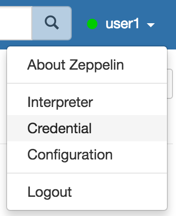
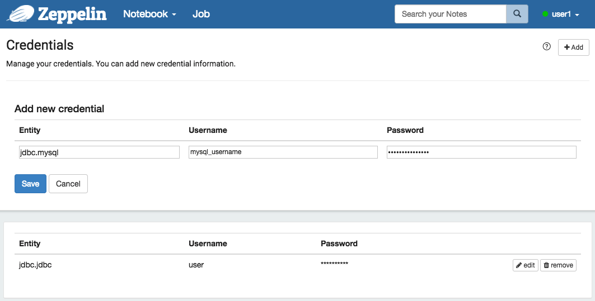

Data Source Authorization in Apache Zeppelin
Overview
Data source authorization involves authenticating to the data source like a Mysql database and letting it determine user permissions. Apache Zeppelin allows users to use their own credentials to authenticate with Data Sources.
For example, let's assume you have an account in the Vertica databases with credentials.
You might want to use this account to create a JDBC connection instead of a shared account with all users who are defined in conf/shiro.ini.
In this case, you can add your credential information to Apache Zeppelin and use them with below simple steps.
How to save the credential information?
You can add new credentials in the dropdown menu for your data source which can be passed to interpreters.

Entity can be the key that distinguishes each credential sets.(We suggest that the convention of the Entity is [Interpreter Group].[Interpreter Name].)
Please see what is interpreter group for the detailed information.
Type Username & Password for your own credentials. ex) Mysql user & password of the JDBC Interpreter.

The credentials saved as per users defined in conf/shiro.ini.
If you didn't activate shiro authentication in Apache Zeppelin, your credential information will be saved as anonymous.
All credential information also can be found in conf/credentials.json.
JDBC interpreter
You need to maintain per-user connection pools. The interpret method takes the user string as a parameter and executes the jdbc call using a connection in the user's connection pool.
Presto
You don't need a password if the Presto DB server runs backend code using HDFS authorization for the user.
Vertica and Mysql
You have to store the password information for users.
Please note
As a first step of data source authentication feature, ZEPPELIN-828 was proposed and implemented in Pull Request #860. Currently, only customized 3rd party interpreters can use this feature. We are planning to apply this mechanism to the community managed interpreters in the near future. Please keep track ZEPPELIN-1070.